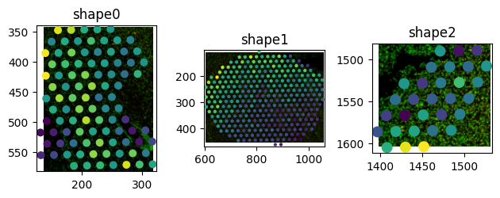

Exploring SpatialData objects using napari#
Napari is a Python library for n-dimensional image visualisation, annotation, and analysis. With napari you can explore, modify and annotate 2D, 3D, and higher-dimensional data. Within the SpatialData ecosystem we provide the napari-spatialdata plugin that allows you do load SpatialData objects into napari.
⚠️ Adjust the variable below to the data path on your specific workstation.
data_path = "../data/"
import spatialdata as sd
import spatialdata_plot as sdp
import napari_spatialdata as nsd
import matplotlib.pyplot as plt
import pandas as pd
for p in [sd, sdp, nsd]:
print(f"{p.__name__}: {p.__version__}")
sdata_visium = sd.read_zarr(data_path + "visium.zarr")
sdata_visium
spatialdata: 0.3.0
spatialdata_plot: 0.2.9
napari_spatialdata: 0.5.5
SpatialData object, with associated Zarr store: /Users/tim.treis/Documents/GitHub/202504_workshop_GSCN/notebooks/day_2/spatialdata/data/visium.zarr
├── Images
│ ├── 'CytAssist_FFPE_Protein_Expression_Human_Glioblastoma_hires_image': DataArray[cyx] (3, 2000, 1744)
│ └── 'CytAssist_FFPE_Protein_Expression_Human_Glioblastoma_lowres_image': DataArray[cyx] (3, 600, 523)
├── Shapes
│ └── 'CytAssist_FFPE_Protein_Expression_Human_Glioblastoma': GeoDataFrame shape: (5756, 2) (2D shapes)
└── Tables
└── 'table': AnnData (5756, 18085)
with coordinate systems:
▸ 'downscaled_hires', with elements:
CytAssist_FFPE_Protein_Expression_Human_Glioblastoma_hires_image (Images), CytAssist_FFPE_Protein_Expression_Human_Glioblastoma (Shapes)
▸ 'downscaled_lowres', with elements:
CytAssist_FFPE_Protein_Expression_Human_Glioblastoma_lowres_image (Images), CytAssist_FFPE_Protein_Expression_Human_Glioblastoma (Shapes)
▸ 'global', with elements:
CytAssist_FFPE_Protein_Expression_Human_Glioblastoma_hires_image (Images), CytAssist_FFPE_Protein_Expression_Human_Glioblastoma_lowres_image (Images), CytAssist_FFPE_Protein_Expression_Human_Glioblastoma (Shapes)
Interactively explore and annotate the data#
# uncomment to run napari and manually annotate the data
# nsd.Interactive(sdata_visium)
<napari_spatialdata._interactive.Interactive at 0x104b1d390>
2025-04-05 00:57:22.910 | DEBUG | napari_spatialdata._view:_on_layer_update:569 - Updating layer.
2025-04-05 00:57:23.070 | DEBUG | napari_spatialdata._view:_on_layer_update:569 - Updating layer.
2025-04-05 00:57:28.698 | DEBUG | napari_spatialdata._view:_on_layer_update:569 - Updating layer.
2025-04-05 00:57:28.701 | DEBUG | napari_spatialdata._view:_on_layer_update:569 - Updating layer.
2025-04-05 00:57:28.702 | DEBUG | napari_spatialdata._view:_on_layer_update:569 - Updating layer.
2025-04-05 00:57:29.857 | DEBUG | napari_spatialdata._view:_on_layer_update:569 - Updating layer.
2025-04-05 00:57:29.859 | DEBUG | napari_spatialdata._view:_on_layer_update:569 - Updating layer.
2025-04-05 00:57:30.150 | DEBUG | napari_spatialdata._view:_on_layer_update:569 - Updating layer.
2025-04-05 00:57:37.329 | DEBUG | napari_spatialdata._view:_on_layer_update:569 - Updating layer.
2025-04-05 00:57:38.138 | DEBUG | napari_spatialdata._view:_on_layer_update:569 - Updating layer.
2025-04-05 00:57:38.414 | DEBUG | napari_spatialdata._view:_on_layer_update:569 - Updating layer.
2025-04-05 00:57:44.664 | DEBUG | napari_spatialdata._view:_on_layer_update:569 - Updating layer.
2025-04-05 00:57:44.668 | DEBUG | napari_spatialdata._view:_on_layer_update:569 - Updating layer.
2025-04-05 00:57:44.669 | DEBUG | napari_spatialdata._view:_on_layer_update:569 - Updating layer.
2025-04-05 00:57:45.469 | DEBUG | napari_spatialdata._view:_on_layer_update:569 - Updating layer.
2025-04-05 00:57:45.470 | DEBUG | napari_spatialdata._view:_on_layer_update:569 - Updating layer.
2025-04-05 00:57:45.694 | DEBUG | napari_spatialdata._view:_on_layer_update:569 - Updating layer.
2025-04-05 00:57:46.690 | DEBUG | napari_spatialdata._view:_on_layer_update:569 - Updating layer.
2025-04-05 00:57:46.692 | DEBUG | napari_spatialdata._view:_on_layer_update:569 - Updating layer.
2025-04-05 00:57:46.693 | DEBUG | napari_spatialdata._view:_on_layer_update:569 - Updating layer.
2025-04-05 00:57:48.797 | DEBUG | napari_spatialdata._view:_on_layer_update:569 - Updating layer.
2025-04-05 00:57:48.799 | DEBUG | napari_spatialdata._view:_on_layer_update:569 - Updating layer.
2025-04-05 00:57:49.013 | DEBUG | napari_spatialdata._view:_on_layer_update:569 - Updating layer.
2025-04-05 00:58:17.978 | DEBUG | napari_spatialdata._view:_on_layer_update:569 - Updating layer.
2025-04-05 00:58:17.982 | DEBUG | napari_spatialdata._view:_on_layer_update:569 - Updating layer.
2025-04-05 00:58:28.419 | WARNING | napari_spatialdata._viewer:_write_element_to_disk:172 - Annotations only added in memory, please manually save to disk.
2025-04-05 00:58:30.170 | DEBUG | napari_spatialdata._view:_on_layer_update:569 - Updating layer.
# The following simulates the regions annotated using napari and makes the notebook reproducible.
# You can disable this cell if you want to annotate the regions yourself using napari
import geopandas as gpd
from shapely.geometry import Polygon
# fmt: off
coords1 = [
(137, 553), (137, 486), (139, 465), (139, 445), (142, 410), (142, 387),
(146, 352), (162, 345), (180, 345), (197, 343), (237, 343), (254, 347),
(289, 363), (300, 377), (304, 393), (302, 410), (287, 418), (267, 425),
(254, 437), (254, 455), (264, 470), (272, 487), (285, 502), (299, 515),
(310, 530), (315, 548), (319, 565), (304, 577), (260, 582), (239, 582),
(222, 575), (202, 572), (185, 570), (137, 553)
]
coords2 = [
(722, 443), (705, 438), (688, 430), (655, 407), (642, 390), (630, 372),
(620, 353), (612, 335), (605, 295), (603, 279), (603, 259), (605, 240),
(618, 222), (658, 179), (690, 157), (705, 149), (723, 140), (757, 120),
(775, 115), (817, 112), (837, 114), (857, 114), (895, 117), (935, 125),
(955, 134), (970, 144), (1000, 170), (1015, 180), (1028, 192), (1045, 202),
(1051, 219), (1055, 235), (1055, 257), (1053, 277), (1050, 293), (1030, 360),
(1023, 377), (1018, 393), (1003, 407), (995, 423), (985, 438), (968, 445),
(951, 450), (928, 455), (891, 458), (852, 458), (752, 450), (722, 443)
]
coords3 = [
(1474, 1594), (1458, 1601), (1439, 1604), (1421, 1604), (1404, 1596),
(1399, 1579), (1399, 1561), (1408, 1546), (1419, 1531), (1451, 1511),
(1464, 1499), (1479, 1487), (1496, 1481), (1511, 1491), (1526, 1502),
(1531, 1519), (1474, 1594)
]
# fmt: on
poly1 = Polygon(coords1)
poly2 = Polygon(coords2)
poly3 = Polygon(coords3)
gdf = sd.models.ShapesModel.parse(
gpd.GeoDataFrame({"geometry": [poly1, poly2, poly3]}),
transformations={"downscaled_hires": sd.transformations.Identity()},
)
sdata_visium["ifi6_hotspots"] = gdf
Inspect the shape we just created#
sdata_visium
SpatialData object, with associated Zarr store: /Users/macbook/embl/projects/basel/spatialdata-workshops/data/visium.zarr
├── Images
│ ├── 'CytAssist_FFPE_Protein_Expression_Human_Glioblastoma_hires_image': DataArray[cyx] (3, 2000, 1744)
│ └── 'CytAssist_FFPE_Protein_Expression_Human_Glioblastoma_lowres_image': DataArray[cyx] (3, 600, 523)
├── Shapes
│ ├── 'CytAssist_FFPE_Protein_Expression_Human_Glioblastoma': GeoDataFrame shape: (5756, 2) (2D shapes)
│ ├── 'Shapes': GeoDataFrame shape: (3, 1) (2D shapes)
│ └── 'ifi6_hotspots': GeoDataFrame shape: (3, 1) (2D shapes)
└── Tables
└── 'table': AnnData (5756, 18085)
with coordinate systems:
▸ 'downscaled_hires', with elements:
CytAssist_FFPE_Protein_Expression_Human_Glioblastoma_hires_image (Images), CytAssist_FFPE_Protein_Expression_Human_Glioblastoma (Shapes), Shapes (Shapes), ifi6_hotspots (Shapes)
▸ 'downscaled_lowres', with elements:
CytAssist_FFPE_Protein_Expression_Human_Glioblastoma_lowres_image (Images), CytAssist_FFPE_Protein_Expression_Human_Glioblastoma (Shapes)
▸ 'global', with elements:
CytAssist_FFPE_Protein_Expression_Human_Glioblastoma (Shapes)
with the following elements not in the Zarr store:
▸ Shapes (Shapes)
▸ ifi6_hotspots (Shapes)
(
sdata_visium.pl.render_images()
.pl.render_shapes(
"ifi6_hotspots",
outline_alpha=1,
contour_px=300,
fill_alpha=0.5,
)
.pl.show("downscaled_hires")
)
INFO Rasterizing image for faster rendering.
Use the annotated shape to extract a subpopulation#
from spatialdata import polygon_query
polygon = sdata_visium["ifi6_hotspots"].geometry.iloc[0]
filtered_sdata = polygon_query(
sdata_visium, polygon=polygon, target_coordinate_system="downscaled_hires"
)
filtered_sdata
SpatialData object
├── Images
│ └── 'CytAssist_FFPE_Protein_Expression_Human_Glioblastoma_hires_image': DataArray[cyx] (3, 239, 182)
├── Shapes
│ ├── 'CytAssist_FFPE_Protein_Expression_Human_Glioblastoma': GeoDataFrame shape: (95, 2) (2D shapes)
│ ├── 'Shapes': GeoDataFrame shape: (1, 1) (2D shapes)
│ └── 'ifi6_hotspots': GeoDataFrame shape: (1, 1) (2D shapes)
└── Tables
└── 'table': AnnData (95, 18085)
with coordinate systems:
▸ 'downscaled_hires', with elements:
CytAssist_FFPE_Protein_Expression_Human_Glioblastoma_hires_image (Images), CytAssist_FFPE_Protein_Expression_Human_Glioblastoma (Shapes), Shapes (Shapes), ifi6_hotspots (Shapes)
▸ 'downscaled_lowres', with elements:
CytAssist_FFPE_Protein_Expression_Human_Glioblastoma (Shapes)
▸ 'global', with elements:
CytAssist_FFPE_Protein_Expression_Human_Glioblastoma (Shapes)
from spatialdata import polygon_query
fig, axs = plt.subplots(1, 3)
idx_in_selection = []
for shape in range(3):
polygon = sdata_visium["ifi6_hotspots"].geometry.iloc[shape]
filtered_sdata = polygon_query(
sdata_visium, polygon=polygon, target_coordinate_system="downscaled_hires"
)
filtered_sdata.pl.render_images().pl.render_shapes(
element="CytAssist_FFPE_Protein_Expression_Human_Glioblastoma",
color="MT-CO2",
).pl.show("downscaled_hires", ax=axs[shape], colorbar=False, title=f"shape{shape}")
# store names of spots within our 3 selections
idx_in_selection.extend(filtered_sdata.tables["table"].obs.index.tolist())
plt.tight_layout()

Use the subpopulation to annotate the original data#
idx_in_selection[:3]
['AACTGCCGCTACATCT-1', 'ACAGAATCATACCTTC-1', 'ACATAAGACAGAGCAT-1']
sdata_visium.tables["table"].obs["annotation"] = ""
sdata_visium.tables["table"].obs.loc[idx_in_selection, "annotation"] = "IFI6 Hotspot"
sdata_visium.pl.render_images().pl.render_shapes(
element="CytAssist_FFPE_Protein_Expression_Human_Glioblastoma",
color="annotation",
fill_alpha=0.5,
).pl.show("downscaled_hires")
INFO Rasterizing image for faster rendering.
/Users/macbook/embl/projects/basel/spatialdata-plot/src/spatialdata_plot/pl/basic.py:879: UserWarning: Converting copy of 'annotation' column to categorical dtype for categorical plotting. Consider converting before plotting.
_render_shapes(
/Users/macbook/embl/projects/basel/spatialdata-plot/src/spatialdata_plot/pl/utils.py:782: FutureWarning: The default value of 'ignore' for the `na_action` parameter in pandas.Categorical.map is deprecated and will be changed to 'None' in a future version. Please set na_action to the desired value to avoid seeing this warning
color_vector = color_source_vector.map(color_mapping)